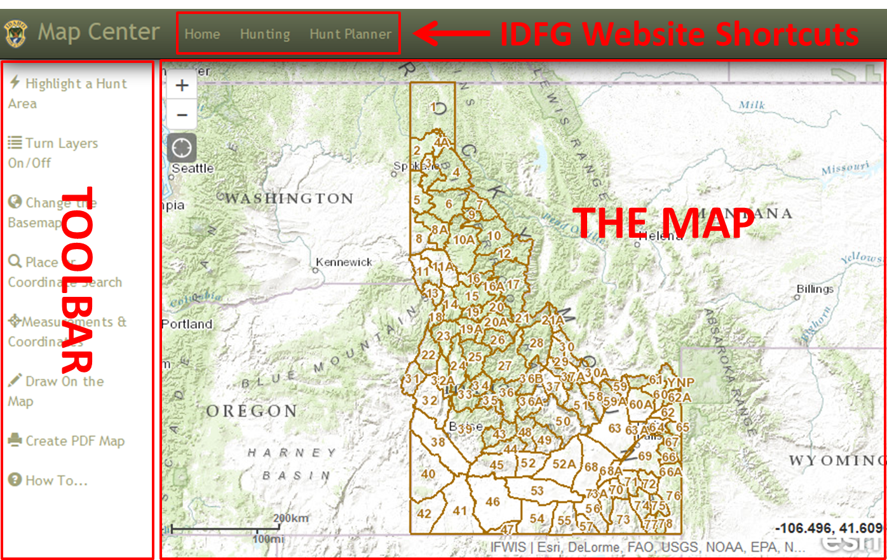
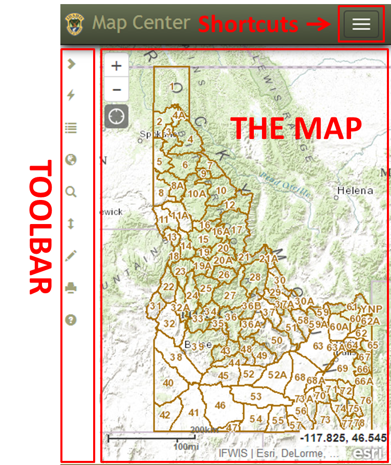

GETTING STARTED: Main Screen Overview
This is a responsive application meaning it is "able to adapt to the context in which it is being viewed"1. Basically, this application should have the same look and feel on any device - desktop, tablet, or mobile. There will be some subtle differences as the screen size changes (see graphics).
DESKTOP/TABLET:

SMALL TABLET/MOBILE:

To expand the toolbar, click the icon. Hover over an icon to get a tooltip. Click an icon to open the tool.
IDFG Website Shortcuts The Map Toolbar
1 Definition from http://www.fastnetwebdesign.co.uk/blog/using-twitter-bootstrap-to-create-a-responsive-web-design-rwd-for-joomla
Created with the Personal Edition of HelpNDoc: Free help authoring tool